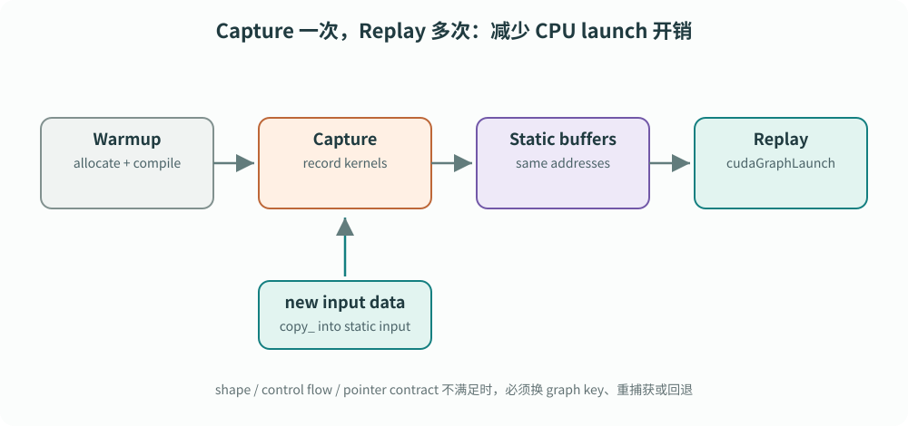
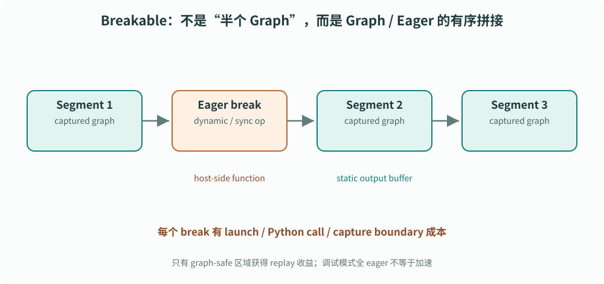

第 23 章 · SGLang 生产推理机制
CUDA Graph：Capture、Replay 与 Breakable Execution
从固定 shape 和地址的 Graph replay，深入 SGLang full/breakable backend、多模态 ViT graph cache 与 persistence 的边界。
从固定 shape 和地址的 Graph replay，深入 SGLang full/breakable backend、多模态 ViT graph cache 与 persistence 的边界。 本章将论文中的算法背景、SGLang 当前实现、可复现的教学抽象与硬件限制分开说明。实现断言固定到 2026-11-23 的上游快照，不能把兼容表当成永久承诺。
读完本章，你应该能
- 画出从输入数据到运行时执行路径的关键对象。
- 解释数学近似、内存布局和 kernel/backend 之间的约束。
- 用 CPU-only toy 实验检查边界，而不把教学代码误称为 GPU 实现。
1. 为什么要把一串 Kernel 录成 Graph
Eager execution 每次 forward 都要经过 Python、C++ 和 CUDA driver 的参数准备与 kernel dispatch。CUDA Graph 把一段 GPU work capture 成图，后续通过一次 graph launch 重放。收益主要来自减少 CPU launch overhead；它不是把模型计算量变少，也不意味着所有 workload 都会更快。Graph replay 用灵活性换取低 dispatch overhead：操作序列、shape、control flow 和内存地址必须稳定。输入数据可以变，但应复制进 capture 时的 static input buffer。
2. Capture → Instantiate → Replay 生命周期

常见流程是先在 side stream warmup，让 lazy allocation 和 JIT compilation 发生在 capture 之外；然后 capture kernel sequence，实例化 graph executable；每次新请求到来时，把数据 copy 到固定 input tensor，再调用 replay。Graph 的参数指针仍然指向原有 buffer。
如果直接把 `static_input` 重新赋值为一个新 tensor，graph 仍会读旧地址；如果 shape 改变，原图的 kernel 参数与内存布局也不再成立。可参考 PyTorch CUDA semantics。
3. Static shape、control flow 与 memory address
CUDA Graph 最容易踩的坑不是“少写一个 capture call”，而是动态性泄漏进 captured region：数据依赖的 CPU branch、host-device synchronization、运行时 shape 变化、临时 tensor 地址变化、JIT 首次编译等。解决方式通常是 warmup、shape bucketing、static buffers，或把不 graph-safe 的操作移出 captured region。对 SGLang serving 而言，batch size、prefill/decode phase、attention metadata 和模型专属状态都会影响 graph capture key。不同 shape bucket 往往意味着不同 graph 实例和 graph-private memory。
4. Full Graph 与 Breakable Graph
Full graph 把整个兼容 forward region 作为一个整体 capture。它简单，但出现动态算子时可能只能关闭整个 Graph。Breakable Graph 将 forward 切成多个 captured segments，在段与段之间执行 eager function，从而保留其余区域的 replay 优势。Breakable 不是“把 Python 代码也录进 GPU graph”。Eager break 中的 host 逻辑每次 replay 仍然执行，且输出必须写回稳定的 buffer，供下游 graph segment 读取。
5. Breakable：Graph / Eager 的有序拼接

当前 SGLang 提供 `@eager_on_graph` 和 `break_graph()`。Capture 时结束当前 segment，记录 eager function 并启动下一个 segment；Replay 时按顺序 launch graph、执行 eager function、再 launch 后续 graph。输出张量的 shape、dtype、device 和结构必须在 replay 间一致；需要时使用 `output_factory` 或由调用方提供 output buffers。
Breakable graph 的每次 break 都增加 graph launch、Python function call 和 capture boundary 成本。调试模式 `--debug-cuda-graph` 会把 forward 变成 eager 执行，是为了定位问题，不是生产加速开关。
6. 多模态 ViT Graph：shape key 还不够
视觉 encoder 的输入 patch 数会随分辨率和视频帧变化。SGLang 的 ViT graph runner 以 sequence length (S) 建立 graph cache；同一个 (S) 还要求 `cu_seqlens` 与 window segmentation pattern 一致。仅仅 tensor 总长度相同，并不能保证 attention 分段语义相同。图内的 input/workspace/output、cu_seqlens 与 rotary buffer 需要稳定地址；如果遇到新的 shape 或更长序列，需要创建新的 graph 或扩展 workspace。Graph 数量增加会消耗 graph-private VRAM。
7. CUDA Graph Persistence：把冷启动 capture 成本跨进程保存
当前 SGLang 文档还描述了可选的 Foundry graph persistence：第一次启动保存 capture graph 与其引用的 memory layout，后续启动从 archive 恢复，而不是重新 capture。它要求 save/load 使用相同 model、flags、parallel layout 和 GPU type；部分 graph backend、autotune、LoRA、speculative、memory saver 和通信配置有明确限制。因此 persistence 是特定配置的可选优化，不是所有 graph 都能跨任意版本和硬件恢复。Archive 不匹配时必须按文档处理，不能把它当成普通 checkpoint。
8. 成本模型：Graph 数量、Private Pool 与 Break 数量
可用一个教学模型拆分 graph 内存：不同 shape/segmentation key 数越多，capture 数量通常越多；每个 capture 可能持有 graph-private allocations。Breakable Graph 则在 capture segments 之间增加 Python/launch 边界。两种成本不能只用“capture 了一次”来估算。要测量时，分别记录 cold start capture time、warm replay latency、graph count、graph memory、batch shape distribution、fallback/eager 比例和实际吞吐。没有受控 benchmark，不要把“CUDA Graph”直接等同于某个固定百分比加速。
9. 交互：选择 Graph 执行策略
Graph execution mode
Full：适合 shape、control flow、memory address 稳定且可 graph-safe 的 forward region。Replay 低 CPU dispatch overhead，但动态操作需要被移出。
Breakable：将动态或不兼容操作放在 eager breaks 中，前后 graph segments 仍可 replay。每个 break 都有额外边界成本。
Eager debug：适合定位 capture/replay 的数值或运行时问题。它用于诊断，不应作为 Graph 性能模式。
运行 cuda_graph_capture.py，检查 graph key、稳定 buffer identity 与 breakable replay 顺序。
10. 源码阅读路线与参考资料
- Breakable CUDA Graph docs：segment capture/replay 和 eager breaks。
- ViT CUDA Graph docs：shape key 与 segmentation pattern。
- Persistence docs：Foundry save/load 限制。
PyTorch 原理：CUDA semantics。实现快照：sgl-project/sglang@563813c0d60282fa848382fec600b40d28ddec98。